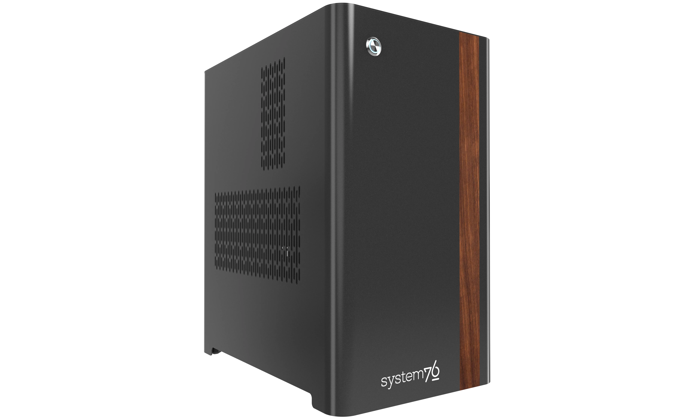

Thelio Major (thelio-major-r5-n3)

The System76 Thelio Major is a desktop with the following specifications:
- Processor options
- Supports AMD Threadripper 7000 series (Zen 4) CPUs
- Motherboard
- Gigabyte TRX50 Aero D running System76 Firmware (non-open)
- AMD TRX50 Chipset
- Daughterboard
- Thelio Io board running open-source firmware
- Version 2.3
- Thelio Io board running open-source firmware
- Graphics options
- Configured with up to one dedicated GPU
- User-expandable to 2 GPUs
- Primary GPU slot:
- PCIe 5.0 x16
- 3-slot height
- 4+-slot cards fit if PCIe slot 2 is empty
- Secondary GPU slot:
- PCIe 5.0 x16
- 2-slot height
- 3-slot cards fit if PCIe slot 3 is empty
- GPU size:
- Internal clearance: 358.00mm
- Recommended maximum length: 348.00mm
- Tested with the following GPUs:
- NVIDIA RTX 6000 Ada
- 4x DisplayPort 1.4a
- NVIDIA RTX 5000 Ada
- 4x DisplayPort 1.4a
- NVIDIA RTX 4500 Ada
- 4x DisplayPort 1.4a
- NVIDIA RTX 4000 Ada
- 4x DisplayPort 1.4a
- NVIDIA GeForce RTX 4090
- 3x DisplayPort 1.4a
- 1x HDMI 2.1a
- NVIDIA GeForce RTX 4080 Super
- 3x DisplayPort 1.4a
- 1x HDMI 2.1a
- NVIDIA GeForce RTX 4070 Ti Super
- 3x DisplayPort 1.4a
- 1x HDMI 2.1a
- NVIDIA RTX A400
- 4x Mini DisplayPort 1.4a
- AMD Radeon Pro W7900
- 3x DisplayPort 2.1
- 1x Mini DisplayPort 2.1
- AMD Radeon RX 7600
- 3x DisplayPort 2.1
- 1x HDMI 2.1a
- NVIDIA RTX 6000 Ada
- Configured with up to one dedicated GPU
- Expansion
- 2x PCIe 5.0 x16 (primary & secondary GPU slots)
- 1x PCIe 4.0 x16
- Memory
- Up to 512GB (4x128GB) dual-channel DDR5 DIMMs @ 5600 MHz
- Tested with the following RAM modules (may ship with other tested modules):
- Hynix HMCT04AGERA202N (128GB/stick)
- Hynix HMCG94AGBRA181N (64GB/stick)
- Hynix HMCG84AGBRA190N (32GB/stick)
- Kingston KF556R28RBE2K4 (32GB/stick)
- Networking
- 1x 10-Gigabit Ethernet (Marvell AQtion AQC113C)
- 1x 2.5-Gigabit Ethernet (Realtek RTL8125)
- Wireless (depending on ship date):
- After November 2025: Wi-Fi 7 + Bluetooth 5.3 (Qualcomm QCNCM865)
- Before November 2025: Wi-Fi 6E + Bluetooth 5.3 (Intel AX211)
- Power
- C13 power cord
- PSU wattage (depending on ship date):
- After October 2025: 1200W PSU
- Before October 2025: 1000W PSU
- 80+ Gold Efficiency
- Tested with the following PSU models (may ship with other tested models):
- After October 2025:
- XPG Core Shift II 1200W
- From July 2024 until October 2025:
- Before July 2024:
- After October 2025:
- Sound
- Back:
- 3.5mm mic in
- 3.5mm line out
- Realtek ALC4080 audio chipset
- Top:
- 3.5mm mic in
- 3.5mm line out
- Realtek ALC897 audio chipset
- Up to 2-channel audio output
- HDMI/DisplayPort audio (depending on GPU)
- Back:
- Storage
- 3x M.2 (PCIe NVMe Gen 5) SSDs
- 1x M.2 (PCIe NVMe Gen 4) SSD
- 4x 2.5" SATA III
- USB
- Back ports:
- 2x Thunderbolt 4
- Top port supports DisplayPort over USB-C when using DisplayPort passthrough from dedicated GPU
- Intel JHL8540 controller
- 4x USB 3.2 Gen 2 (Type-A)
- 4x USB 3.2 Gen 1 (Type-A)
- 2x Thunderbolt 4
- Top ports:
- 1x USB 3.2 Gen 1 (Type-C)
- 1x USB 3.2 Gen 1 (Type-A)
- Back ports:
- Dimensions
- 46.2cm × 26.2cm × 40.8cm